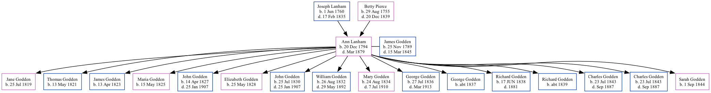

Ann Godden (née Lanham) 1794 - 1879
[ Home ] | [ Surnames Index ] | [ Family History ]The youngest of 7 children of Joseph Lanham and Betty Pierce, , Ann was the 6 times great-grandmother of Stephanie Hardesty (née Teten), was born in West Lavington, Wiltshire, England on Dec 20, 1794 and married James Godden (with whom she had 16 children: Jane, Thomas, James, Maria, John, Elizabeth, John, William, Mary, George, George, Richard, Richard, Charles Henry, Charles Henry and Sarah Ann) in Market Lavington, Wiltshire, England on Oct 20, 1818.
She died in Mar 1879 in Fulham, Middlesex, England.
Parents
- Joseph was born on Jun 1, 1760
- Betty was born on Aug 29, 1755
Children
- Jane was born on Jul 25, 1819
- Thomas was born on May 13, 1821
- James was born on Apr 13, 1823
- Maria was born on May 15, 1825
- John was born on Apr 14, 1827
- Elizabeth was born on May 25, 1828
- John was born on Jul 25, 1830
- William was born on Aug 26, 1832
- Mary was born on Aug 24, 1834
- George was born on Jul 27, 1836
- George was born c. 1837
- Richard was born on Jun 17, 1838
- Richard was born c. 1839
- Charles Henry was born on Jul 23, 1843
- Charles Henry was born on Jul 23, 1843
- Sarah Ann was born on Sep 1, 1844
Family Tree
Data (GEDCOM) maintained by Jay Weston Hannah, Omaha, Nebraska, USA.
Website generated by ged2site. Last updated on Jun 18, 2024.